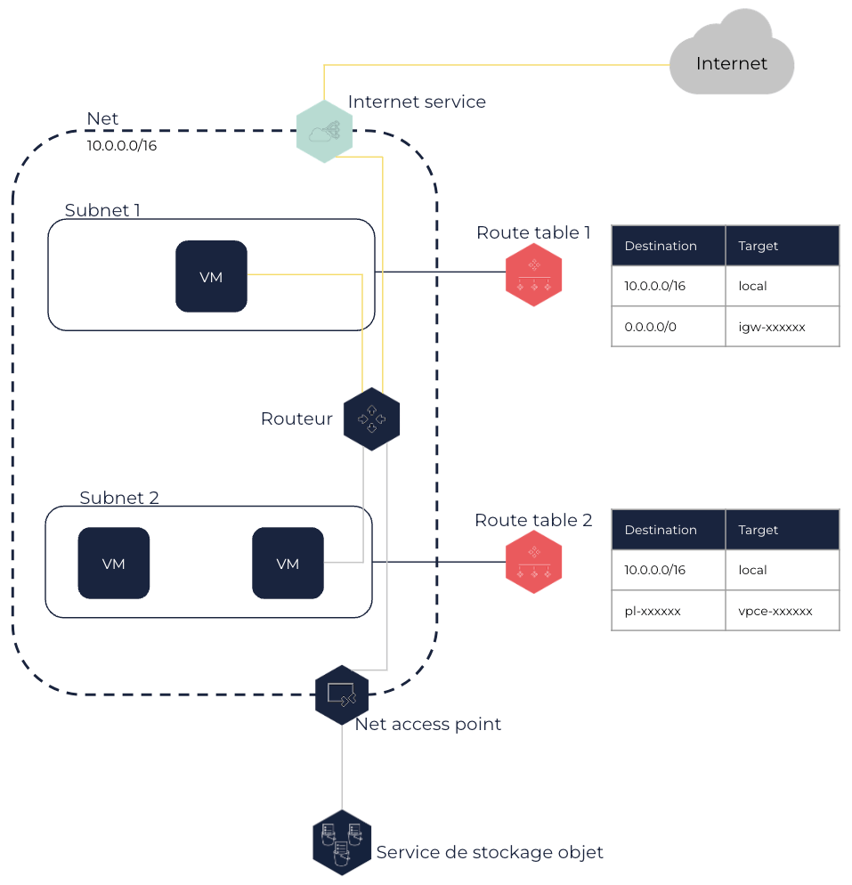

À propos des route tables
Les route tables (tables de routage) vous permettent de contrôler le routage du trafic d’un Subnet grâce à des routes que vous créez dans celles-ci. Chaque Net est créé avec une route table par défaut que vous pouvez modifier, mais vous pouvez également créer votre propre route table pour chaque Subnet.
Vous pouvez router le trafic vers différents éléments comme un internet service ou un Net access point. Le trafic ciblant une IP du bloc CIDR du Net est toujours routé localement.
Route Tables et Subnets
Les route tables contrôlent le routage du trafic réseau grâce à des règles appelées routes qui indiquent où le trafic réseau est dirigé. Elles sont créées pour un Net et sont utilisées par son routeur, qui est automatiquement créé au sein de votre Net, afin de déterminer comment router le trafic.
Chaque Subnet d’un Net doit être associé à une route table, qui contrôle le routage pour toutes les machines virtuelles (VM) placées dans ce Subnet. Une même route table peut être associée à plusieurs Subnets, mais un Subnet ne peut être associé qu’à une seule route table.
|
De la même manière qu’il est recommandé de dédier un Subnet à une seule application, il est également recommandé d’utiliser une route table et un security group par Subnet. |
Dans le schéma suivant, chaque Subnet est associé à une route table. Les VM du Subnet 1 peuvent accéder à Internet à travers l’internet service, et les VM du Subnet 2 peuvent accéder à un service de stockage objet à l’aide du Net access point.

Pour en savoir plus sur les routes vers un internet service et un Net access point, voir la section Routes et options de routage ci-dessous.
Route table principale et autres route tables
Route table principale
Lorsque vous créez un Net, une route table est également automatiquement créée et considérée comme la route table principale. La route table principale agit comme un routeur implicite dans votre Net : elle contrôle le routage du trafic pour tous les Subnets qui ne sont pas explicitement associés avec une route table. Elle est donc implicitement associées à tout Subnet que vous créez dans le Net jusqu’à ce que vous l’associez explicitement à une route table.
La route table principale créée avec le Net contient uniquement la route local à sa création, qui route tout trafic dirigé vers une cible dans le bloc CIDR du Net au sein du Net lui-même. Cette route ne peut être ni modifiée, ni supprimée. Vous pouvez ajouter ou supprimer des routes dans la route table principale, et modifier ces routes. Cependant, vous ne pouvez pas supprimer la route table principale.
Vous pouvez également définir quelle route table est la principale pour le Net, ce qui modifie ainsi la route table utilisée pour tout nouveau Subnet ou tout Subnet qui n’est pas explicitement associé à une route table.
|
Vous pouvez explicitement associer un Subnet avec la route table principale afin que la route table utilisée par le Subnet ne soit pas modifiée si vous définissez une autre route table comme la principale. |
Autres route tables
Vous pouvez créer des route tables supplémentaires pour votre Net que vous pouvez ensuite associer avec un ou plusieurs Subnets. Vous pouvez ensuite y ajouter des routes, les remplacer ou les supprimer si besoin. Vous pouvez également supprimer une route table qui n’est plus associée à aucun Subnet.
Toute route table que vous créez contient la route local que vous ne pouvez ni supprimer ni modifier. Pour protéger votre Net, vous pouvez garder la route table principale avec uniquement la route local, et explicitement associer chaque nouveau Subnet avec une route table que vous avez créée. Tout nouveau Subnet peut ainsi uniquement diriger le trafic au sein du Net uniquement jusqu’à ce que vous lui autorisiez explicitement de le diriger ailleurs grâce à des routes que vous ajoutez à sa route table. Ceci vous permet de contrôler comment le trafic sortant est routé pour chaque Subnet de votre Net.
Routes et options de routage
Une route spécifie :
-
La destination du trafic, en notation CIDR. Cela peut être une plage d’IP ou une IP unique (en utilisant un préfixe en /32).
-
La target, qui correspond à l’élément réseau utilisé pour atteindre la destination du trafic.
Vous pouvez router le trafic en utilisant les targets suivantes :
-
Local : Une route
localest automatiquement ajoutée à toute route table créée dans un Net, avec le bloc CIDR du Net en destination etlocalen target. Le trafic venant des VM et allant vers une IP appartenant au bloc CIDR du Net reste ainsi au sein du réseau local du Net.Vous ne pouvez ni modifier ni supprimer la route
local. -
Un internet service : Cela permet aux VM du Subnet qui ont une IP publique associée d’être directement connectées à Internet à travers l’internet service du Net. Pour cela, vous devez ajouter une route avec le bloc CIDR 0.0.0.0/0 en destination et l’ID de l’internet service en target. Pour en savoir plus sur les internet services, voir À propos des internet services.
Par exemple, la route table d’un Subnet avec des VM directement connectées à Internet dans un Net ayant le bloc CIDR 10.0.0.0/16 et l’internet serviceigw-12345678attachée à celui-ci contient les routes suivantes :Destination Target 10.0.0.0/16
local0.0.0.0/0
igw-12345678 -
Un NAT service : Cela permet aux VM du Subnet d’être indirectement connectées à Internet à travers un NAT service. Pour cela, vous devez ajouter une route avec le bloc CIDR 0.0.0.0/0 en destination et l’ID du NAT service en target. Pour en savoir plus sur les NAT services, voir À propos des NAT services.
Par exemple, la route table d’un Subnet avec des VM indirectement connectées à Internet dans un Net ayant le bloc CIDR 10.0.0.0/16 et utilisant le NAT servicenat-12345678attaché au Net pour diriger le trafic vers Internet contient les routes suivantes :Destination Target 10.0.0.0/16
local0.0.0.0/0
nat-12345678 -
Une VM ou une interface réseau au sein du Net : Cela permet aux VM dans un Subnet d’envoyer du trafic vers une VM ou une interface réseau en particulier. Vous pouvez router le trafic vers une VM lorsque celle-ci n’a qu’une interface réseau. Si la VM a des network interface cards (NIC) attachées, vous devez router le trafic vers une de ses interfaces réseau. Pour cela, vous devez ajouter une route avec le bloc CIDR approprié en destination et l’ID de la VM ou de l’interface réseau en target.
Par exemple, dans le même Net ayant le bloc CIDR 10.0.0.0/16, si une VM d’administration a une interface réseaueni-11111111dans un Subnet A avec pour IP 10.10.0.10 et une autre interface réseau dans un Subnet B, la route table d’un Subnet avec des VM ayant besoin de se connecter à cette VM d’administration depuis le Subnet A a les routes suivantes :Destination Target 10.0.0.0/16
local10.10.0.10/32
eni-11111111 -
Une virtual gateway (VGW) : Cela permet aux VM du Subnet de diriger le trafic vers un réseau distant par une connexion VPN ou DirectLink. Pour cela, vous devez ajouter une route avec le bloc CIDR du réseau distant en destination et l’ID de la VGW attachée à votre Net en target, et créer une connexion VPN ou DirectLink en utilisant cette VGW. Pour en savoir plus, voir Connexions VPN and DirectLink.
Par exemple, la route table d’un Subnet dans un Net ayant le bloc CIDR 10.0.0.0/16 dirigeant le trafic vers votre réseau interne ayant le bloc CIDR 192.168.1.0/24 à travers un connexion VPN utilisant la VGWvgw-12345678contient les routes suivantes :Destination Target 10.0.0.0/16
local192.168.1.0/24
vgw-12345678 -
Un Net access point : Cela vous permet de créer une connexion privée entre votre Net et un service OUTSCALE. La route appropriée avec l’ID de la prefix list du service (
pl-xxxxxxxx) en destination et l’ID du Net access point (vpce-xxxxxxxx) en target est automatiquement ajoutée aux route tables que vous spécifiez pour le Net access point. Pour en savoir plus sur les Net access points, voir À propos des Net access points. Pour en savoir plus sur les prefix lists, voir Obtenir des informations sur les prefix lists.Vous ne pouvez ni modifier ni supprimer cette route, mais vous pouvez modifier les route tables utilisées par le Net access point.
-
Un Net peering : Cela vous permet de diriger le trafic vers un Net pair. Pour cela, vous devez ajouter une route avec tout ou partie du bloc CIDR du Net pair en destination et l’ID du Net peering en target. Pour en savoir plus sur les Net peerings, voir À propos des Net peerings.
Le propriétaire du Net pair doit ajouter une route dans les route tables de son Net pour router le trafic vers votre Net.
Par exemple, la route table d’un Subnet dans un Net A ayant le bloc CIDR 10.0.0.0/16, dirigeant le trafic vers un Net pair B ayant le bloc CIDR 192.168.1.0/24 et utilisant le Net peering
pcx-12345678contient les routes suivantes :Destination Target 10.0.0.0/16
local192.168.1.0/24
pcx-12345678Les route tables du Net pair B doivent contenir les routes suivantes :
Destination Target 192.168.1.0/24
local10.0.0.0/16
pcx-12345678
Si la destination du trafic correspond à plusieurs routes dans la route table associée, la route la plus spécifique avec le bloc CIDR le plus restreint correspondant à cette destination est toujours celle utilisée pour router le trafic.
Une route est toujours dans l’état suivant :
-
Active : La route est active et est utilisée pour router le trafic.
Page connexe